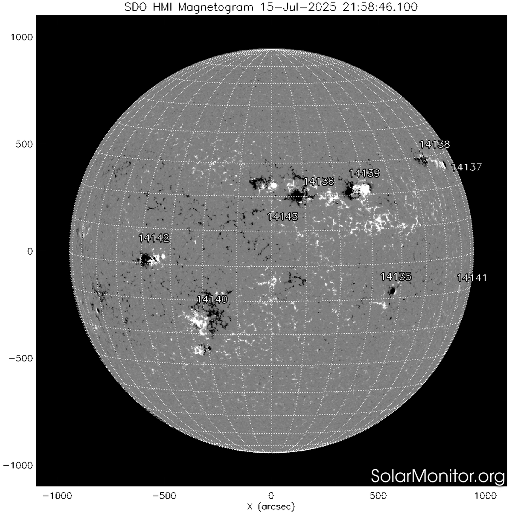

水母雨🍥
@ena1_mizuki
@Rain_Antar1121 大概这就是所谓巴德霾，以前靠这个在早上挑战成功过裸眼观测太阳黑子

Rain Antares🏳️⚧️🍥
@Rain_Antar1121
太阳～先要说，不该用任何普通望远镜在任何时候直视太阳🥺
喵，日出第一分钟时，无云地平线上的大气消光是堪用的巴德膜（x）在阳光闪黑亮瞎咱的眼睛之前，有一小段时间能用双筒清晰看见日面的黑子群🥰
但这种事情不要试啊…很危险嗷呜！！对视力损害严重呜，看太阳一定要用专门视日的设备喵❛˓◞˂̵՞ https://t.co/ue3q52EclY https://t.co/9FNAnxSIIZ